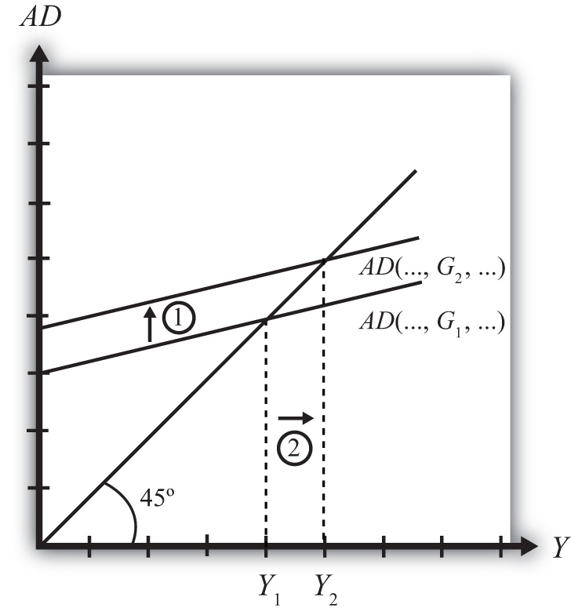

Suppose the economy is initially in equilibrium in the G&S market with government demand at level G1 and real GNP at Y1, shown in Figure 19.4 "Effect of an Increase in Government Demand in the G&S Market". The initial AD function is written as AD(…, G1, …) to signify the level of government demand and to denote that other variables affect AD and are at some initial and unspecified values.
Figure 19.4 Effect of an Increase in Government Demand in the G&S Market
Next, suppose the government raises demand for G&S from G1 to G2, ceteris paribus. The increase might arise because a new budget is passed by the legislature with new spending initiatives. The ceteris paribus assumption means that all other exogenous variables are assumed to remain fixed. Most importantly in this context, this means that the increase in government demand is not paid for with increases in taxes or decreases in transfer payments.
Since higher government demand raises aggregate demand, the AD function shifts up from AD(…, G1, …) to AD(…, G2, …) (step 1). The equilibrium GNP in turn rises to Y2 (step 2). Thus the increase in government demand causes an increase in real GNP.
The adjustment process follows the “GNP too low” story. When government demand increases, but before GNP rises to adjust, AD is greater than Y1. The excess demand for G&S depletes inventories, in this case for firms that supply the government, causing merchants to increase order size. This leads firms to increase output, thus raising GNP.
Jeopardy Questions. As in the popular television game show, you are given an answer to a question and you must respond with the question. For example, if the answer is “a tax on imports,” then the correct question is “What is a tariff?”
In the text, the effect of a change in government demand is analyzed. Use the G&S model (diagram) to individually assess the effect on equilibrium GNP caused by the following changes. Assume ceteris paribus.
Consider an economy in equilibrium in the G&S market.